M01 Connecting rod checkpoint
M01 已完成 按用户最新训练范围结项
原14组算子与近百万参数 GNOT 已完成6000步。近百万 GNO 由用户在4852步终止，保留2000和4000步评估；WNO、GAOT均在2000步触发用户指定停止条件。未完成、已停止或不适用的评估栏统一以“-”占位，已取得的结果保留。完成表示本轮任务结项，不表示所有配置均训练到6000步或达到目标精度。
- 统一算子组与 TS3 MSE、FNO M07 使用同20个纯拉伸TRAIN案例、1,083,269个原TET10节点、50维输入、同normalized MSE、seed与学习率协议；每步累积20例，只在2000/4000/6000步评估。这里是单seed训练集拟合，不能作为泛化结论。
- 参数量不完全相等：原算子组从32,740到7,331,021；表中展示精确参数数及相对981,348参数TS3的倍数。新增四配置约98万至100万参数，仍未配平FLOPs、显存或训练耗时，不宣称等算力比较。
- MGN历史参考采用不同的物理相对平方训练损失，与本轮normalized MSE不同；早期56维输入、容量、密度/曲率监督及历史TS3/FNO实验在下方独立保留，不能与新50维协议合并当作单因素对照。
- 停止配置只参与其已实际完成的共同预算比较；不将4000步结果填入6000步，不将缺失值当零。MGN不补造未核对的四项局部指标。
新增近百万OFormer已完成：991,359参数（TS3的1.0102倍），同协议6000步，actualbest6000，活动用时91.3分钟。恰好6000步 U=1.175%、VM=6.880%；原1,363,588参数OFormer单独保留。宽度109、4层编码器和4层解码器，原forward不变；参数接近不代表算力匹配。补充实验六项曲线与完整预算结果 · CPU导出核对
参数量、实际预算与固定步数物理误差
数值为20例物理相对L2的算术平均；每格依次为 U / VM，越低越好。参数倍数仅供识别容量差异。 参数比≤1.05的配置统一放在上组，>1.05的放在下组，不适用或参数未确定的另列。点击表头2000/4000/6000步可切换预算并保留当前U/VM指标；点击对应列的U或VM可直接选择该步数与指标，再点同一标题切换升降序。本页所有表格均可点击标题排序。默认按6000步VM误差升序，同值按另一项误差排序；缺少所选步数结果的配置始终置于组末。MGN保留不同训练损失的参考标记。
当前排序：6000步 · VM误差升序（低→高）；各参数组分别排序，缺失结果始终放在组末。
| 配置 | 参数量 | 相对TS3参数 | 状态 | / | / | / |
|---|---|---|---|---|---|---|
| 参数比 ≤1.05× | ||||||
| MGN（历史参考） | 985,540 | 1.00× | 6000步；训练损失不同 | 2.531% / 9.234% | 2.276% / 7.418% | 2.084% / 6.652% |
| OFormer_1M | 991,359 | 1.01× | 6000步完成 | 1.624% / 7.783% | 1.383% / 7.264% | 1.175% / 6.880% |
| GNOT_1M | 984,276 | 1.00× | 6000步完成 | 2.562% / 10.074% | 2.480% / 8.585% | 1.958% / 7.605% |
| TS3 | 981,348 | 1.00× | 6000步完成 | 2.175% / 10.180% | 1.748% / 8.257% | 1.500% / 7.669% |
| Transolver | 985,156 | 1.00× | 6000步完成 | 2.253% / 10.113% | 1.896% / 8.505% | 1.585% / 7.706% |
| Transolver++ | 858,188 | 0.87× | 6000步完成 | 2.245% / 11.264% | 1.972% / 9.015% | 1.557% / 7.934% |
| FNO M07 | 981,310 | 1.00× | 6000步完成 | 3.160% / 13.621% | 2.897% / 12.980% | 2.582% / 12.226% |
| TFNO | 514,685 | 0.52× | 6000步完成 | 4.051% / 13.779% | 3.642% / 13.087% | 3.166% / 12.361% |
| GNO | 32,740 | 0.03× | 6000步完成 | 8.569% / 25.465% | 8.466% / 24.771% | 8.301% / 22.873% |
| DEEPONET | 419,332 | 0.43× | 6000步完成 | 7.743% / 26.728% | 6.597% / 25.907% | 5.682% / 22.897% |
| LSM | 937,661 | 0.96× | 6000步完成 | 26.344% / 36.027% | 29.396% / 40.942% | 29.586% / 45.814% |
| GNO_1M | 1,002,885 | 1.02× | 用户在4852步终止 | 3.372% / 14.467% | 3.082% / 13.641% | - |
| WNO_980K | 979,968 | 1.00× | 2000步条件停止 | 5.907% / 18.748% | - | - |
| GAOT_980K | 980,590 | 1.00× | 2000步条件停止 | 4.865% / 21.216% | - | - |
| 参数比 >1.05× | ||||||
| GNOT | 3,877,268 | 3.95× | 6000步完成 | 1.830% / 7.789% | 1.572% / 7.245% | 1.330% / 6.766% |
| OFormer | 1,363,588 | 1.39× | 6000步完成 | 1.594% / 7.842% | 1.396% / 7.229% | 1.171% / 6.816% |
| GINOT | 2,862,917 | 2.92× | 6000步完成 | 5.647% / 9.360% | 3.991% / 8.449% | 3.238% / 7.911% |
| UNO | 7,331,021 | 7.47× | 6000步完成 | 3.298% / 10.365% | 2.962% / 9.880% | 2.588% / 9.407% |
| PCNO | 3,008,996 | 3.07× | 6000步完成 | 5.245% / 10.856% | 4.620% / 10.147% | 4.097% / 9.486% |
| FNOGNO | 1,619,588 | 1.65× | 6000步完成 | 10.370% / 20.546% | 10.071% / 19.504% | 9.466% / 18.481% |
| GINO | 1,616,150 | 1.65× | 6000步完成 | 10.513% / 20.750% | 10.063% / 19.995% | 9.384% / 19.144% |
| ONO | 1,608,452 | 1.64× | 6000步完成 | 107.885% / 84.947% | 105.759% / 87.424% | 106.000% / 83.020% |
| WNO 原配置 | 4,591,485 | 4.68× | 零步失败；以979,968参数配置重跑 | - | - | - |
| GAOT 原配置 | 1,587,806 | 1.62× | 零步失败；以980,590参数配置重跑 | - | - | - |
| 不适用或参数未确定 | ||||||
| GeoFNO | - | - | 原非均匀warp仅支持2D | - | - | - |
| RIGNO | - | - | 原三角形预处理不适用真四面体 | - | - | - |
| CNO | - | - | 原实现仅支持1D/2D | - | - | - |
0095典型算例 · 全部模型预测对比
点击上表模型名称可打开对应预测；也可在下方选择任意模型A/B，显示有限元真值、两组预测及两组绝对误差。25个有结果的模型配置、63个已保存预算快照均可切换；没有输出的配置说明原因。可选位移/VM、2000/4000/6000或最新保存、同步旋转与缩放、网格和原节点。
“最新保存”可能对应不同实际预算；MGN的6000预算导出为best5950，GNO最新4000、WNO/GAOT最新2000，界面均明确标注。只读取现有原节点预测，不新增NN/FE计算。
OFormer近百万补充实验曲线与0095精确6000步空间对照
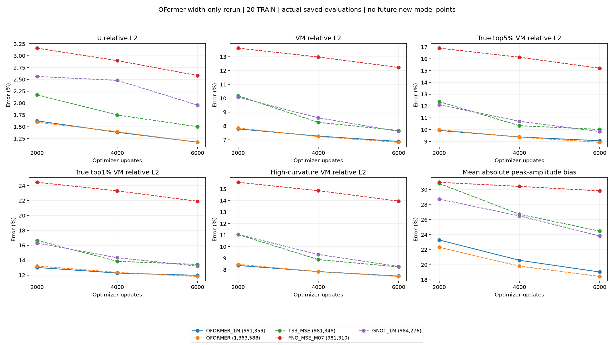
仅实际2000/4000/6000评估点；原136万配置与近百万配置分开。下图为0095单例，不能替代20例平均，四场使用共同完整色标。
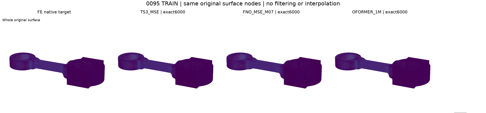
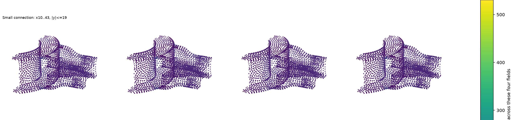
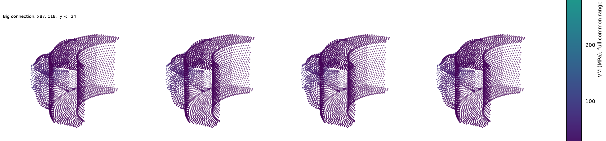
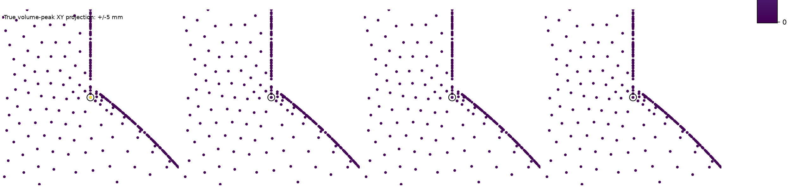
停止依据：WNO在2000步 U=5.907%、VM=18.748%；GAOT U=4.865%、VM=21.216%。两项均严格高于 TS3（2.175% / 10.180%）、GNOT近百万（2.562% / 10.074%）和 MGN（2.531% / 9.234%），因此停止。近百万GNO的4000步 U=3.082%、VM=13.641%，其后由用户明确终止。
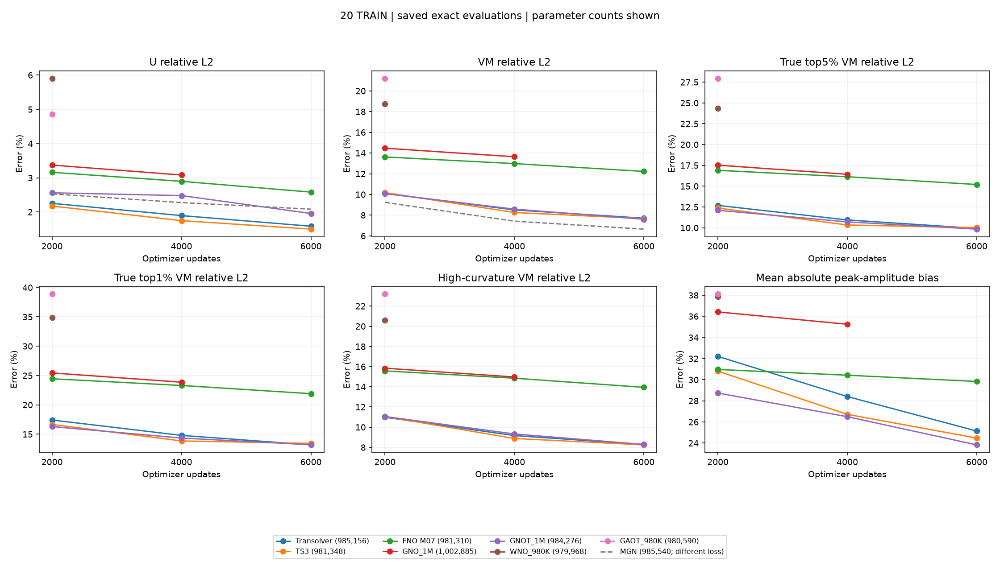
全部配置在2000、4000、6000步的六项误差
top5%和top1%集合由真实VM定义；高曲率子集仅依赖几何。峰幅项为各例最大VM的绝对相对偏差均值。所有数值单位为%。
| 配置 | 参数量 | 步数 | U | VM | top5% VM | top1% VM | 高曲率 VM | 平均绝对峰幅偏差 |
|---|---|---|---|---|---|---|---|---|
| Transolver | 985,156 | 2000 | 2.253215 | 10.112773 | 12.688572 | 17.418675 | 10.983571 | 32.206721 |
| Transolver | 985,156 | 4000 | 1.895770 | 8.505164 | 10.945757 | 14.794338 | 9.167808 | 28.406998 |
| Transolver | 985,156 | 6000 | 1.584847 | 7.705983 | 9.927394 | 13.180286 | 8.284557 | 25.140534 |
| Transolver++ | 858,188 | 2000 | 2.245061 | 11.263933 | 13.698181 | 18.494733 | 12.382893 | 32.158480 |
| Transolver++ | 858,188 | 4000 | 1.972300 | 9.014869 | 11.224479 | 14.984764 | 9.733721 | 28.812278 |
| Transolver++ | 858,188 | 6000 | 1.556858 | 7.933768 | 9.925317 | 13.053070 | 8.535498 | 24.270680 |
| TFNO | 514,685 | 2000 | 4.051385 | 13.779340 | 16.773140 | 23.921706 | 15.540834 | 29.933619 |
| TFNO | 514,685 | 4000 | 3.642400 | 13.086687 | 15.934507 | 22.639207 | 14.766339 | 29.010222 |
| TFNO | 514,685 | 6000 | 3.166441 | 12.360863 | 15.134073 | 21.353480 | 13.962864 | 27.811881 |
| UNO | 7,331,021 | 2000 | 3.297897 | 10.364768 | 12.459911 | 17.642508 | 11.365275 | 25.840966 |
| UNO | 7,331,021 | 4000 | 2.961807 | 9.880414 | 12.035455 | 16.974289 | 10.813615 | 25.107120 |
| UNO | 7,331,021 | 6000 | 2.588298 | 9.407197 | 11.680267 | 16.414464 | 10.291711 | 24.218816 |
| DEEPONET | 419,332 | 2000 | 7.742522 | 26.727692 | 38.338828 | 51.051527 | 29.916035 | 52.671631 |
| DEEPONET | 419,332 | 4000 | 6.597211 | 25.907312 | 36.410196 | 48.909193 | 29.015161 | 52.584043 |
| DEEPONET | 419,332 | 6000 | 5.681766 | 22.896707 | 31.072368 | 43.328560 | 26.187498 | 51.652142 |
| GNOT | 3,877,268 | 2000 | 1.830094 | 7.789269 | 10.099407 | 13.746724 | 8.576921 | 25.955820 |
| GNOT | 3,877,268 | 4000 | 1.571676 | 7.245156 | 9.499250 | 12.839963 | 7.968232 | 24.044095 |
| GNOT | 3,877,268 | 6000 | 1.329970 | 6.766447 | 8.934931 | 11.926549 | 7.443516 | 21.522664 |
| ONO | 1,608,452 | 2000 | 107.885011 | 84.947464 | 68.148468 | 73.513189 | 70.135974 | 80.509175 |
| ONO | 1,608,452 | 4000 | 105.758895 | 87.423873 | 67.471675 | 72.613162 | 71.230226 | 80.523833 |
| ONO | 1,608,452 | 6000 | 106.000332 | 83.020009 | 75.330523 | 79.214748 | 74.339926 | 84.657015 |
| GNO | 32,740 | 2000 | 8.568709 | 25.465260 | 36.224314 | 48.842572 | 28.553123 | 52.585024 |
| GNO | 32,740 | 4000 | 8.465960 | 24.771477 | 34.935700 | 47.241846 | 27.659586 | 52.383122 |
| GNO | 32,740 | 6000 | 8.300587 | 22.873242 | 31.653528 | 43.451739 | 25.229379 | 50.119969 |
| GINO | 1,616,150 | 2000 | 10.513400 | 20.749506 | 26.189567 | 36.474527 | 22.650629 | 38.506206 |
| GINO | 1,616,150 | 4000 | 10.062943 | 19.994817 | 25.016727 | 35.009307 | 21.777044 | 36.838684 |
| GINO | 1,616,150 | 6000 | 9.383931 | 19.144157 | 23.654467 | 33.219957 | 20.829347 | 35.018360 |
| FNOGNO | 1,619,588 | 2000 | 10.370207 | 20.545646 | 26.072708 | 36.368133 | 22.482451 | 38.932671 |
| FNOGNO | 1,619,588 | 4000 | 10.070893 | 19.504202 | 24.655720 | 34.626626 | 21.298602 | 36.630601 |
| FNOGNO | 1,619,588 | 6000 | 9.466497 | 18.480548 | 23.139076 | 32.619003 | 20.199805 | 34.223727 |
| GINOT | 2,862,917 | 2000 | 5.647089 | 9.359718 | 10.481947 | 14.003126 | 9.857666 | 19.460540 |
| GINOT | 2,862,917 | 4000 | 3.991072 | 8.449016 | 9.537988 | 12.609242 | 8.846612 | 18.105461 |
| GINOT | 2,862,917 | 6000 | 3.237501 | 7.911358 | 8.898056 | 11.631118 | 8.246836 | 17.193858 |
| PCNO | 3,008,996 | 2000 | 5.244635 | 10.856000 | 13.991442 | 20.302887 | 12.213884 | 32.188283 |
| PCNO | 3,008,996 | 4000 | 4.620453 | 10.147458 | 13.098271 | 18.982704 | 11.372661 | 31.461664 |
| PCNO | 3,008,996 | 6000 | 4.096963 | 9.486052 | 12.211576 | 17.600037 | 10.552432 | 30.107131 |
| LSM | 937,661 | 2000 | 26.343830 | 36.027039 | 35.433234 | 37.925945 | 36.177914 | 24.011988 |
| LSM | 937,661 | 4000 | 29.395598 | 40.941987 | 39.928585 | 41.348090 | 40.811911 | 21.173491 |
| LSM | 937,661 | 6000 | 29.585943 | 45.813670 | 42.234920 | 41.904823 | 44.957636 | 22.731831 |
| OFormer | 1,363,588 | 2000 | 1.594423 | 7.842270 | 9.993770 | 13.222770 | 8.463612 | 22.330079 |
| OFormer | 1,363,588 | 4000 | 1.395789 | 7.228725 | 9.365296 | 12.359392 | 7.836404 | 19.814785 |
| OFormer | 1,363,588 | 6000 | 1.171340 | 6.815726 | 8.931498 | 11.820078 | 7.417905 | 18.434776 |
| TS3 | 981,348 | 2000 | 2.175231 | 10.179617 | 12.373644 | 16.661297 | 11.053000 | 30.810303 |
| TS3 | 981,348 | 4000 | 1.748425 | 8.257339 | 10.338207 | 13.849406 | 8.879978 | 26.721121 |
| TS3 | 981,348 | 6000 | 1.500378 | 7.668623 | 10.022538 | 13.432556 | 8.246307 | 24.474378 |
| FNO M07 | 981,310 | 2000 | 3.160341 | 13.620959 | 16.902367 | 24.445624 | 15.577443 | 30.969424 |
| FNO M07 | 981,310 | 4000 | 2.897250 | 12.979784 | 16.134706 | 23.302489 | 14.852547 | 30.426579 |
| FNO M07 | 981,310 | 6000 | 2.582199 | 12.225843 | 15.200638 | 21.905276 | 13.949414 | 29.833282 |
| GNO_1M | 1,002,885 | 2000 | 3.372378 | 14.467032 | 17.524063 | 25.442580 | 15.843365 | 36.417215 |
| GNO_1M | 1,002,885 | 4000 | 3.081610 | 13.641110 | 16.426381 | 23.861031 | 14.976415 | 35.251745 |
| GNO_1M | 1,002,885 | 6000 | - | - | - | - | - | - |
| GNOT_1M | 984,276 | 2000 | 2.561658 | 10.074070 | 12.107335 | 16.300677 | 11.058107 | 28.740417 |
| GNOT_1M | 984,276 | 4000 | 2.480281 | 8.585128 | 10.710495 | 14.337965 | 9.325466 | 26.497408 |
| GNOT_1M | 984,276 | 6000 | 1.957628 | 7.605477 | 9.841209 | 13.202650 | 8.288318 | 23.831808 |
| WNO_980K | 979,968 | 2000 | 5.907486 | 18.748457 | 24.333096 | 34.898733 | 20.610675 | 37.873663 |
| WNO_980K | 979,968 | 4000 | - | - | - | - | - | - |
| WNO_980K | 979,968 | 6000 | - | - | - | - | - | - |
| GAOT_980K | 980,590 | 2000 | 4.864684 | 21.215522 | 27.956615 | 38.884724 | 23.192787 | 38.108641 |
| GAOT_980K | 980,590 | 4000 | - | - | - | - | - | - |
| GAOT_980K | 980,590 | 6000 | - | - | - | - | - | - |
| OFormer_1M | 991,359 | 2000 | 1.623887 | 7.783354 | 9.934194 | 13.027330 | 8.372222 | 23.295291 |
| OFormer_1M | 991,359 | 4000 | 1.383056 | 7.263629 | 9.383577 | 12.276092 | 7.840163 | 20.586328 |
| OFormer_1M | 991,359 | 6000 | 1.174806 | 6.879593 | 9.062961 | 11.974707 | 7.448397 | 19.030848 |
实际保存步数、actualbest与活动时间
actualbest仅在已完成组的三次规定评估中选择；停止组不补造6000预算best。活动分钟包含训练、评估、保存及其它开销，恢复、排队与墙钟不等同；并行组活动时间有重叠，不能视为独占GPU吞吐。
| 配置 | 保存步数 | actualbest步数 | 活动分钟 | 训练分钟 | 评估分钟 | 保存分钟 |
|---|---|---|---|---|---|---|
| Transolver | 6000 | 6000 | 211.81 | 198.33 | 0.04 | 0.38 |
| Transolver++ | 6000 | 6000 | 263.81 | 246.52 | 0.03 | 0.41 |
| TFNO | 6000 | 6000 | 45.48 | 41.38 | 0.02 | 0.30 |
| UNO | 6000 | 6000 | 130.90 | 118.75 | 0.03 | 2.18 |
| DEEPONET | 6000 | 6000 | 86.87 | 78.69 | 0.02 | 0.19 |
| GNOT | 6000 | 6000 | 403.04 | 367.44 | 0.07 | 1.24 |
| ONO | 6000 | 6000 | 358.36 | 327.67 | 0.08 | 0.47 |
| GNO | 6000 | 6000 | 111.29 | 101.26 | 0.03 | 0.08 |
| GINO | 6000 | 6000 | 105.26 | 95.43 | 0.05 | 0.44 |
| FNOGNO | 6000 | 6000 | 93.65 | 86.37 | 0.03 | 0.49 |
| GINOT | 6000 | 6000 | 134.38 | 125.58 | 0.04 | 0.73 |
| PCNO | 6000 | 6000 | 95.84 | 90.19 | 0.03 | 0.58 |
| LSM | 6000 | 2000 | 77.83 | 72.69 | 0.04 | 0.30 |
| OFormer | 6000 | 6000 | 92.77 | 85.57 | 0.02 | 0.36 |
| TS3 | 6000 | 6000 | 152.25 | - | - | - |
| FNO M07 | 6000 | 6000 | 26.76 | - | - | - |
| GNO_1M | 4852 | - | - | 894.88 | 0.06 | 0.18 |
| GNOT_1M | 6000 | 6000 | 423.82 | 389.95 | 0.08 | 0.88 |
| WNO_980K | 2000 | - | 32.12 | 30.55 | 0.01 | 0.10 |
| GAOT_980K | 2000 | - | 66.28 | 62.95 | 0.01 | 0.21 |
| OFormer_1M | 6000 | 6000 | 91.32 | 83.31 | 0.04 | 0.30 |
原14组完整曲线与GNOT的0095空间对照
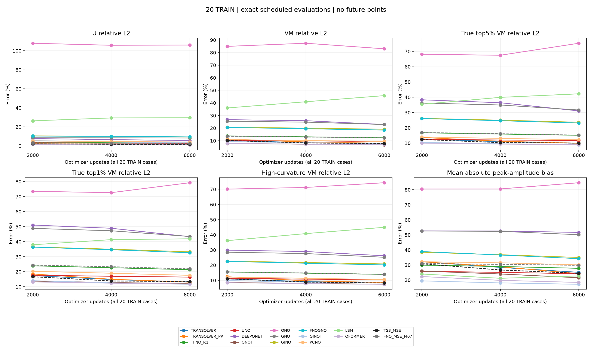
0095仅为单例，不能替代20例平均；图为GNOT近百万恰好6000步，全原外表面节点、四场共同完整物理色标，不以actualbest替换。
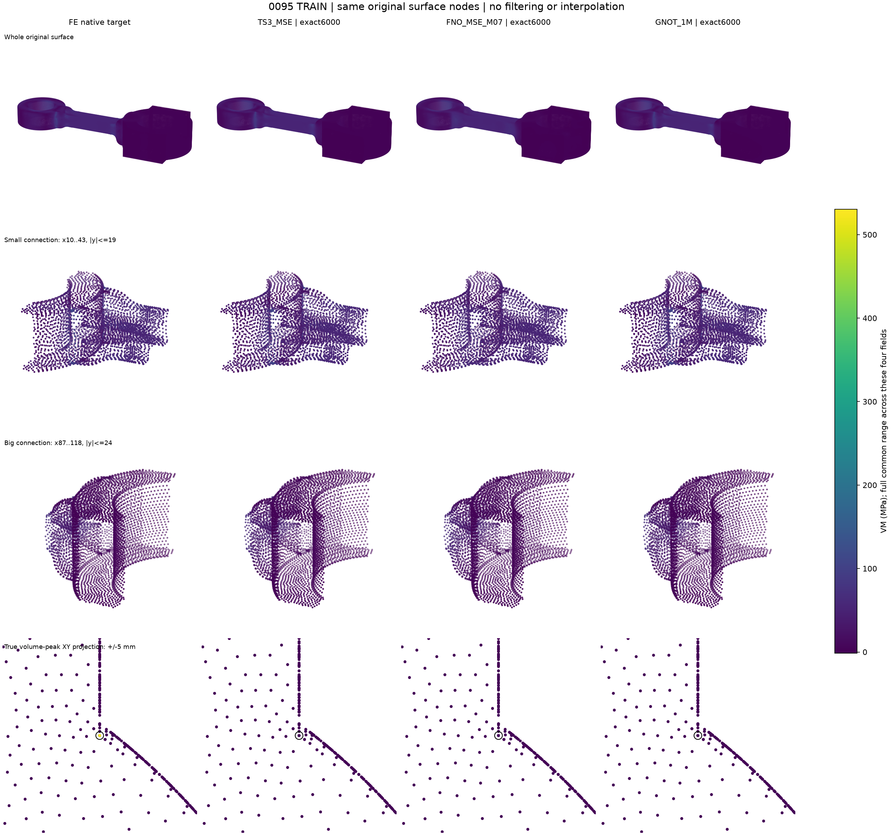
完整指标与参数 JSON · 固定预算六项误差 CSV · 独立结果页
原零步故障与不适用实现保留原因；没有以2D投影或其他网络替代。原V100全量训练与暂停FP64不计作已完成计算，后续预算记“-”，按本次用户结项指示不作为M01继续进行的前置条件。旧实验数据与离线PDF保留原时间范围。
损失、几何特征与网络容量
本轮实验已完成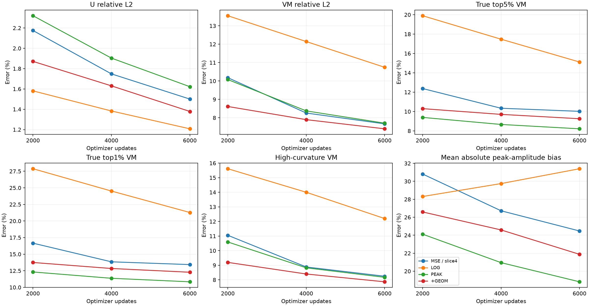
| 6000步 · 误差 (%) | U | VM | top5% VM | 峰幅偏差 |
|---|---|---|---|---|
| MSE / slice4 | 1.500 | 7.669 | 10.023 | 24.474 |
| LOG | 1.208 | 10.744 | 15.117 | 31.403 |
| PEAK | 1.622 | 7.706 | 8.216 | 18.820 |
| +GEOM | 1.379 | 7.400 | 9.257 | 21.877 |
AI审阅 · Codex（ChatGPT）
- 峰值加权改善峰区；对数应力没有改善应力误差。
- 边距离与曲率特征改善均值；切片收益不单调，FNO增加模态有帮助。
- 整体场已有改善，0095尖峰仍明显漏掉。仅为TRAIN拟合，不能作泛化结论。
查看详情 · 本轮完整指标、方法、耗时与评审依据
本轮九组单因素实验
同20个纯拉伸TRAIN几何、1083269个原TET10节点，单seed 20261029。每组6000次更新，每次累积全部20场；仅2000/4000/6000完整评估。九组均完成120000 case-updates，actualbest均为6000。M01已按用户最新范围结项；原V100全量训练未计作完成，保留为“-”。
| 模型 | 参数 | 输入维 | 有效分钟 | actualbest |
|---|---|---|---|---|
| TS3_MSE | 981348 | 50 | 152.248 | 6000 |
| TS3_LOG | 981348 | 50 | 153.069 | 6000 |
| TS3_PEAK | 981348 | 50 | 161.318 | 6000 |
| TS3_MSE_GEOM | 981860 | 52 | 153.293 | 6000 |
| TS3_MSE_S016 | 982980 | 50 | 151.708 | 6000 |
| TS3_MSE_S064 | 989508 | 50 | 184.086 | 6000 |
| FNO_MSE_M04 | 258142 | 50 | 26.459 | 6000 |
| FNO_MSE_M07 | 981310 | 50 | 26.760 | 6000 |
| FNO_MSE_M10 | 2684254 | 50 | 26.863 | 6000 |
相同步数不代表参数、FLOPs和时间配平；有效耗时是本次运行记录，不作受控吞吐结论。不同训练loss数值不直接比较。actualbest由三次无权重物理U/VM相对L2平方目标选取，与exact epoch分开。
全部三次评估 · 物理误差 (%)
| 模型 | updates | U | VM | 真实top5% VM | 真实top1% VM | 高曲率VM | 峰幅偏差 |
|---|---|---|---|---|---|---|---|
| TS3_MSE | 2000 | 2.17523126 | 10.17961707 | 12.37364398 | 16.66129660 | 11.05300030 | 30.81030315 |
| TS3_MSE | 4000 | 1.74842523 | 8.25733850 | 10.33820742 | 13.84940588 | 8.87997757 | 26.72112097 |
| TS3_MSE | 6000 | 1.50037842 | 7.66862259 | 10.02253774 | 13.43255634 | 8.24630738 | 24.47437833 |
| TS3_LOG | 2000 | 1.58131328 | 13.54944045 | 19.89753045 | 27.88400860 | 15.61630875 | 28.31372872 |
| TS3_LOG | 4000 | 1.38336003 | 12.14570408 | 17.47247370 | 24.52007654 | 14.00320251 | 29.75211870 |
| TS3_LOG | 6000 | 1.20782443 | 10.74440975 | 15.11704590 | 21.28718705 | 12.20191673 | 31.40292934 |
| TS3_PEAK | 2000 | 2.32090188 | 10.07760299 | 9.39394388 | 12.31924007 | 10.59593700 | 24.11778881 |
| TS3_PEAK | 4000 | 1.90370059 | 8.37336800 | 8.66542507 | 11.36879611 | 8.82388089 | 20.95120085 |
| TS3_PEAK | 6000 | 1.62227934 | 7.70585312 | 8.21639823 | 10.83733748 | 8.17370484 | 18.81999128 |
| TS3_MSE_GEOM | 2000 | 1.87141510 | 8.61360651 | 10.29828065 | 13.75015525 | 9.19670659 | 26.59274716 |
| TS3_MSE_GEOM | 4000 | 1.63056426 | 7.89747948 | 9.70666810 | 12.84473997 | 8.40001119 | 24.59043371 |
| TS3_MSE_GEOM | 6000 | 1.37861438 | 7.39980824 | 9.25741744 | 12.27821921 | 7.86529881 | 21.87696136 |
| TS3_MSE_S016 | 2000 | 2.15752096 | 10.09334115 | 12.26084957 | 16.45966054 | 10.94199275 | 30.89731275 |
| TS3_MSE_S016 | 4000 | 1.72048452 | 8.25259392 | 10.40406741 | 13.95328925 | 8.86634664 | 26.74822497 |
| TS3_MSE_S016 | 6000 | 1.46781428 | 7.63714081 | 9.67262987 | 12.83156650 | 8.18190807 | 24.28872076 |
| TS3_MSE_S064 | 2000 | 2.13078603 | 10.13577686 | 12.32306890 | 16.61201092 | 11.02537102 | 30.99444896 |
| TS3_MSE_S064 | 4000 | 1.73463786 | 8.32905935 | 10.30357304 | 13.75981535 | 8.94056185 | 27.08193278 |
| TS3_MSE_S064 | 6000 | 1.48960370 | 7.67220141 | 9.74310485 | 12.99071276 | 8.22290122 | 24.49728933 |
| FNO_MSE_M04 | 2000 | 4.23611828 | 18.01516648 | 23.31951452 | 33.56095372 | 20.09395433 | 39.87416576 |
| FNO_MSE_M04 | 4000 | 3.93403626 | 17.22206845 | 22.25359573 | 32.12054589 | 19.30546025 | 37.31785593 |
| FNO_MSE_M04 | 6000 | 3.43474037 | 16.10304769 | 20.73771659 | 29.99502404 | 18.11114398 | 34.46201201 |
| FNO_MSE_M07 | 2000 | 3.16034112 | 13.62095873 | 16.90236701 | 24.44562429 | 15.57744322 | 30.96942432 |
| FNO_MSE_M07 | 4000 | 2.89724962 | 12.97978369 | 16.13470621 | 23.30248945 | 14.85254655 | 30.42657933 |
| FNO_MSE_M07 | 6000 | 2.58219902 | 12.22584256 | 15.20063835 | 21.90527578 | 13.94941365 | 29.83328206 |
| FNO_MSE_M10 | 2000 | 2.66498807 | 11.73138796 | 14.75074071 | 21.28932899 | 13.30276425 | 29.52094334 |
| FNO_MSE_M10 | 4000 | 2.44242075 | 11.28284742 | 14.16990115 | 20.38703346 | 12.73280838 | 28.45562390 |
| FNO_MSE_M10 | 6000 | 2.17376347 | 10.75050252 | 13.47969976 | 19.30081957 | 12.06054205 | 27.06984960 |
每个几何独立计算相对L2后，对20例等权平均；top5%/top1%按真实VM选节点。高曲率区为冻结曲率描述最高四分位原节点。峰幅偏差为每例max VM相对bias的绝对值均值，不能保证峰值位置正确。
方法与边界
- 输入50维：真正删除原56维中6个积分系数；GEOM额外增加2维。无新节点、标签插值或新FE；未读取val/test。
- MSE：按TRAIN共享RMS归一化，位移三分量平均MSE与VM MSE等权。LOG只将VM改为log1p(VM/1MPa)/TRAIN log RMS，评估expm1还原且不截断。PEAK只把真实top5%节点VM loss权重设为5，其余1，除总权重；权重不进输入。
- GEOM：原TRI6边中点法向跳变≥30°或physical face-group交界处的corner-midpoint线段距离/L；二次TRI6 face-centroid最大绝对主曲率面积平均到原surface节点，再最近surface节点延拓到内部并乘L。它们是几何近似描述。
- TS3固定8层、宽128、8头、MLP2、dropout0；slices 4/16/64。FNO固定R64、W9、4层、latent16、head263，只改modes 4/7/10。全部从未训练初值开始，匹配参数共享；FNO共同有符号频率正确对应。
- AdamW 3e-4、warm50、余弦前2000步降到1e-5后固定，wd0、clip1，FP32/TF32，无AMP。每25步保存完整状态；未加预算或早停。
完整评审
LOG的位移更好，但全局VM、峰区与峰幅更差；PEAK降低top5%/top1%及峰幅误差，代价是U及全局VM略升。GEOM六项均值均下降，0095部分局部区域仍退步。切片4/16/64收益不单调，16略优；FNO模式4→7→10在同一评估步数六项均改善，但modes10的6000步六项仍高于新TS3 MSE。GEOM＋PEAK组合未测试，收益不能相加。旧relative-loss FULL50/DOUBLE属于独立历史，未作为本轮MSE基准。
0095峰值位置与幅度
原节点真值峰值530.414904 MPa，各模型自身最大值仅约86–114 MPa，尖峰仍未恢复。表中真实峰值位置预测与模型自身最大值分列；argmax距离是两个离散原节点极值的空间距离，不能代替全场精度。此单例与20例均值分开。
| 模型 | 真实峰值处预测MPa | 自身最大MPa | signed max bias (%) | argmax距离mm |
|---|---|---|---|---|
| MSE / slice4 | 1.159666 | 110.446257 | -79.177384 | 134.824729 |
| LOG | 0.953130 | 86.113160 | -83.764943 | 133.786537 |
| PEAK | 2.156173 | 112.137991 | -78.858439 | 130.677903 |
| +GEOM | 1.139958 | 113.966430 | -78.513720 | 129.015274 |
| slice16 | 1.114008 | 109.570660 | -79.342462 | 129.127497 |
| slice64 | 1.205324 | 108.847934 | -79.478719 | 130.703577 |
| FNO m4 | 0.593828 | 90.020610 | -83.028265 | 151.992193 |
| FNO m7 | 9.495308 | 86.889564 | -83.618567 | 149.086763 |
| FNO m10 | 11.569502 | 87.580139 | -83.488371 | 149.271138 |
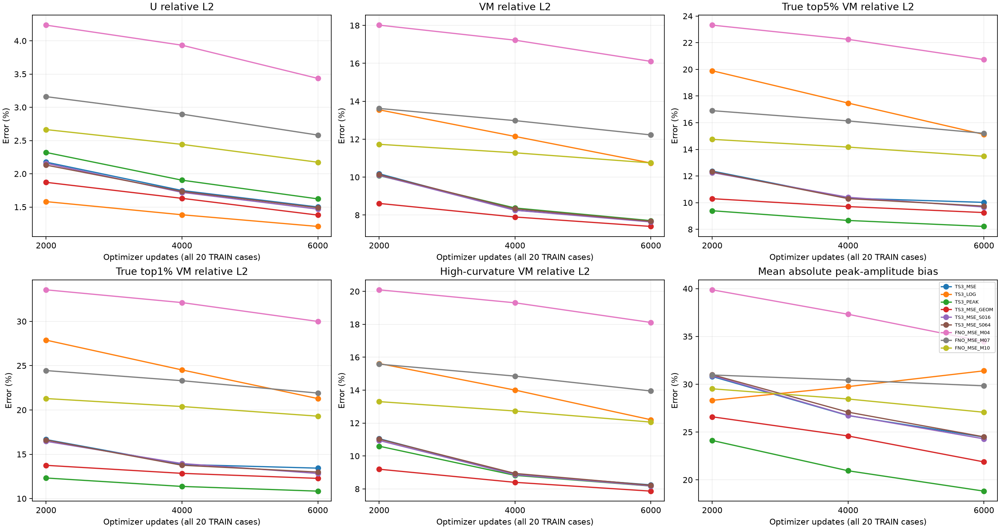
网页空间图均为原surface节点的XY投影、原坐标×1；固定几何窗口保留全厚度、全部原节点。共同完整物理色标保留负预测，不作百分位截断。各模型采用相同的真实VM升序绘制顺序以处理投影重叠，未作标签插值或节点抽样；空心圈标记真实峰值坐标。没有引入新的三维视图，原三维载荷查看器保留在历史详情。
九组CPU导出和三次保存预测的六项物理指标复核通过，最大差异1.6653e-16；发布阶段0额外NN/FE。训练来源、配置、初值和清单SHA检查通过。
查看详情 · 历史实验、原三维查看器与完整审阅记录
新增授权：仅宽128、4 slices从2000轮续到累计4000轮；当前4000/4000，已完成。原4组的2000轮对照单独保留。
宽128 · 4 slices · 2000→4000轮续训
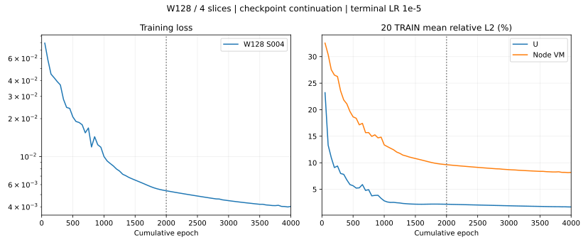
全量TS3 / MGN各20轮已完成；纯拉伸小模型消融已完成4/4组。FP64保持用户暂停。
20条纯拉伸 · 小参数TS3消融
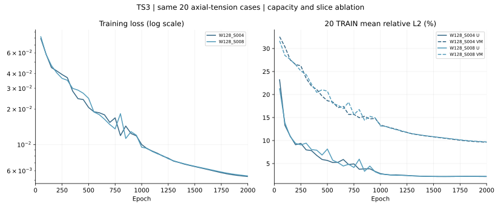
800条TRAIN · TS3与MGN固定20轮
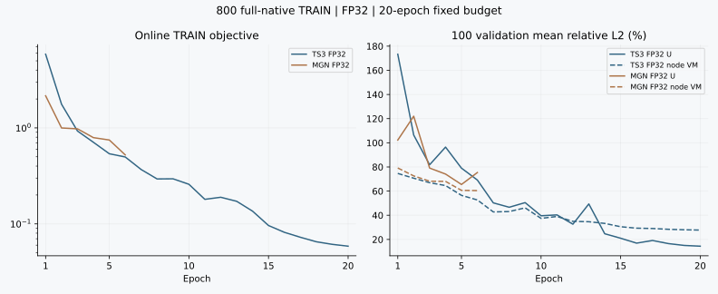
原20条混合载荷 · Overfitting loss
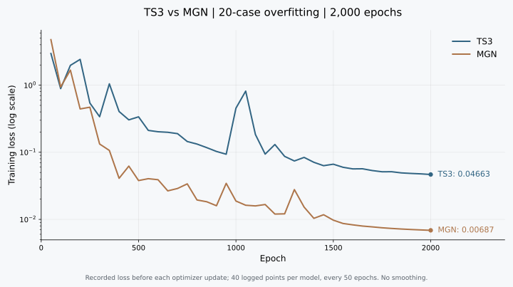
已交付 · 原20条混合载荷的slice / 容量消融
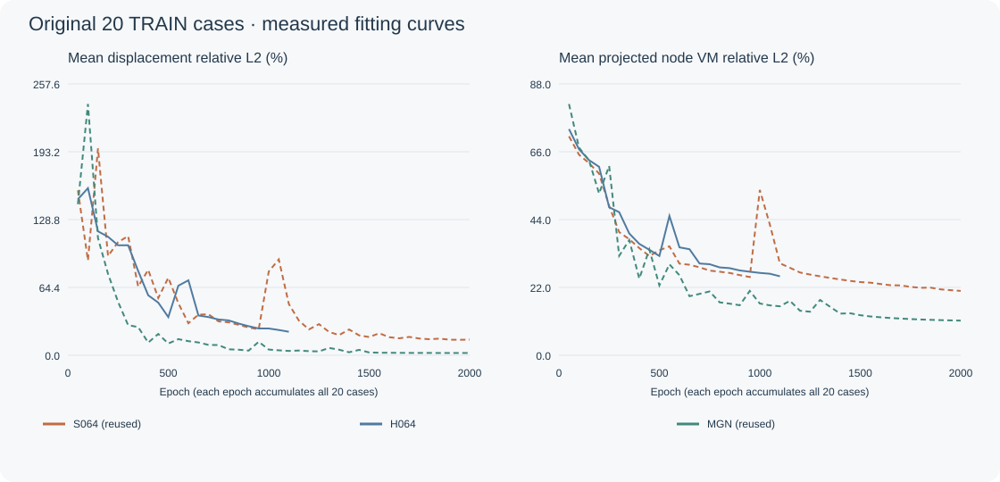
同20例TRAIN、相近参数、同4000轮：MGN均U 2.276% / VM 7.418%；TS3为1.676% / 8.145%。MGN应力误差更低，TS3位移误差更低；仅限本次20例拟合对照。
同20条纯拉伸 · TS3 / MGN参数匹配 · 4000轮
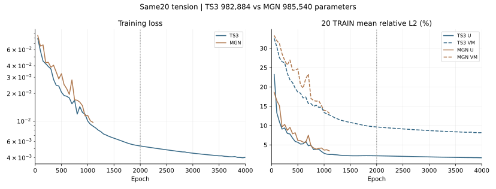
4000→6000轮续训：MGN已6000轮：U 2.087% / VM 6.638%（best 5950）；TS3已6000轮：U 1.397% / VM 7.515%（best 6000）。同20条纯拉伸TRAIN、原节点、FP32/TF32、无AMP，保持LR 1e-5与Adam状态；4000轮对照保留。
同20条纯拉伸 · TS3 / MGN续训至6000轮
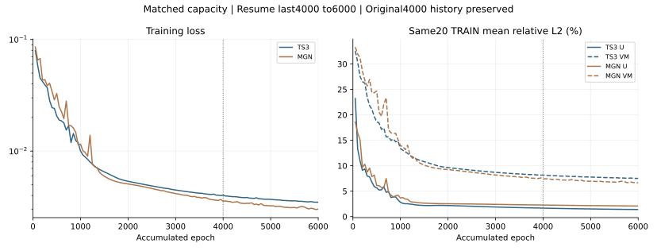
同20条纯拉伸 · 四模型固定轮次对照
PointNet+FNO当前6000/6000轮；同20条纯拉伸TRAIN、原节点、相近参数、FP32/TF32无AMP、同AdamW/LR历史。
| 模型 | 2000轮 U / VM | 4000轮 U / VM | 6000轮 U / VM |
|---|---|---|---|
| TS3 982,884参数 | 2.1782% / 9.6359% | 1.6691% / 8.1736% | 1.3971% / 7.5150% |
| MGN 985,540参数 | 2.5309% / 9.2341% | 2.2755% / 7.4180% | 2.0845% / 6.6521% |
| FNO（无PointNet） 982,942参数 | 3.0589% / 12.8462% | 2.8060% / 12.3344% | 2.5345% / 11.7226% |
| PointNet+FNO 982,883参数 | 3.6518% / 14.2408% | 3.3305% / 13.6374% | 2.9567% / 12.9476% |
表内为恰好对应轮次的TRAIN平均相对L2，不以预算内最佳轮次替换。最佳checkpoint结果另列在下载数据中；不代表泛化误差。
TS3 / MGN / FNO / PointNet+FNO · 训练loss与误差
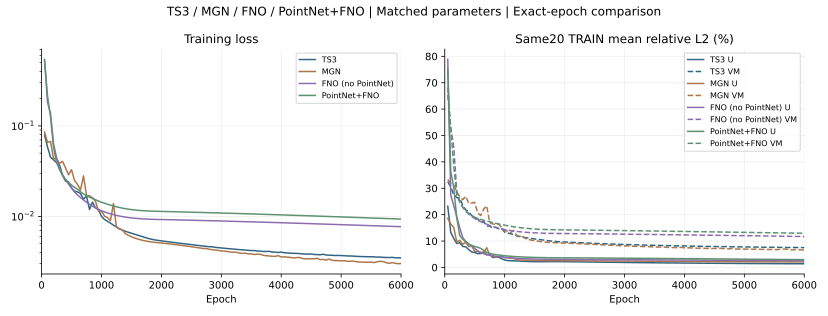
新增实验 · 高曲率区域加密监督
新TS3当前6000/6000轮；网络982884参数与未训练初值同原TS3，保留全部原节点，每轮增加270824个曲率偏置点（约25%），每50轮轮换4组采样位置。
| 同20条TRAIN | 2000轮 U / VM | 4000轮 U / VM | 6000轮 U / VM |
|---|---|---|---|
| TS3原节点基线 | 2.1782% / 9.6359% | 1.6691% / 8.1736% | 1.3971% / 7.5150% |
| TS3＋曲率加密采样 | 2.2019% / 9.8373% | 1.7014% / 8.2423% | 1.3885% / 7.6434% |
按原节点统一评估；额外点由原TET10场插值，不代表更高精度的新有限元真值。此组增加了点计算量，不能声称等计算预算或泛化优势。原四方法结果完整保留。
恰好6000轮 · 空间指标对照
本次单seed6000轮：高曲率表面节点的位移与应力误差小幅下降；整体原节点应力和体积权重近似误差更高。表格均取恰好6000轮，不以最佳checkpoint替换。
| 指标 U / VM | 原TS3 | 曲率加密TS3 |
|---|---|---|
| 原节点等权 | 1.3971% / 7.5150% | 1.3885% / 7.6434% |
| 高曲率表面节点 | 1.7867% / 10.0020% | 1.7164% / 9.9481% |
| 体积权重近似 | 1.2412% / 6.8856% | 1.2640% / 7.2372% |
高曲率子集由同一几何mask定义；体积权重为cell-volume/10正节点权重近似，非精确FE体积积分。下载的推理权重和逐例预测对应预算内最佳checkpoint（新TS3实际5850轮），与本表6000轮区分。
TS3曲率加密 · loss与原节点误差
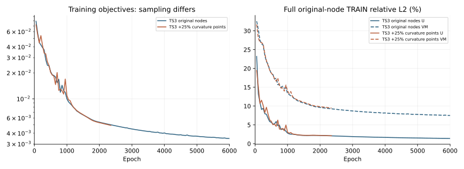
论文采样机制迁移 · 物理残差＋解梯度
新组6000/6000轮；与原TS3相同982884参数、未训练初值、20例TRAIN和LR历史。全原节点保留；附加25%点中一半固定均匀覆盖，一半按预测的物理平衡残差与解梯度，每100轮刷新其中10%，只复用本轮更新前训练前向的预测。按用户要求，仅2000/4000/6000轮完整评估；之前50至450轮的评估保留在历史记录。
| U / VM | 2000轮 | 4000轮 | 6000轮 |
|---|---|---|---|
| 原TS3 | 2.1782% / 9.6359% | 1.6691% / 8.1736% | 1.3971% / 7.5150% |
| TS3＋曲率采样 | 2.2019% / 9.8373% | 1.7014% / 8.2423% | 1.3885% / 7.6434% |
| TS3＋残差/梯度自适应采样 | 9.9512% / 27.9693% | 9.9540% / 27.4709% | 10.0982% / 27.8180% |
表取恰好各轮更新后的原节点评估；预算内最佳权重另列。原四方法与曲率组均保留，不预设改善结论。
最终观察：这套残差/梯度采样迁移配置在2000、4000、6000轮的统一原节点评估均明显差于原TS3；6000轮的高曲率子集和体积权重近似误差也更高。训练loss下降没有转化为固定评估上下文下的精度改善。这是本配置、20条TRAIN、单seed的结果，不能据此否定论文原方法。
恰好6000轮 · 空间误差
| U / VM | 原TS3 | 曲率组 | 残差/梯度组 |
|---|---|---|---|
| 原节点等权 | 1.3971% / 7.5150% | 1.3885% / 7.6434% | 10.0982% / 27.8180% |
| 高曲率表面节点 | 1.7867% / 10.0020% | 1.7164% / 9.9481% | 11.6034% / 28.9227% |
| 体积权重近似 | 1.2412% / 6.8856% | 1.2640% / 7.2372% | 9.0218% / 31.9633% |
高曲率子集采用相同几何mask；体积指标采用相同正cell-volume/10节点近似，非精确体积积分。新下载权重和逐例结果实际best 4000轮。
残差/梯度采样 · 真实曲线

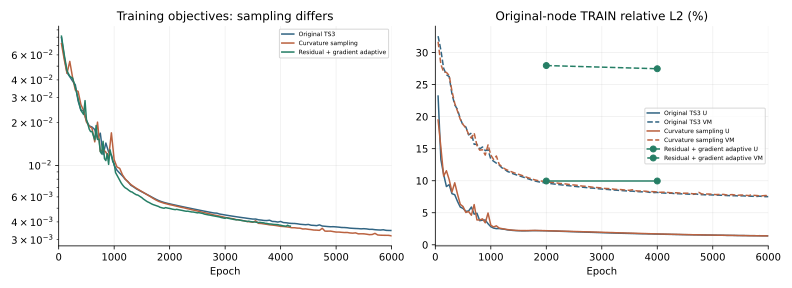
原节点密度加权 · 10 / 5 / 2 / 1
新组6000/6000轮。1083269个原TET10节点、原输入与标签、原未训练初值均保持；只将最密10%、随后15%、随后25%、其余50%节点的loss相对权重设为10、5、2、1，每例权重均值归一化为1。
| 原节点U / VM | 2000轮 | 4000轮 | 6000轮 |
|---|---|---|---|
| 原TS3 | 2.1782% / 9.6359% | 1.6691% / 8.1736% | 1.3971% / 7.5150% |
| TS3＋密度权重10/5/2/1 | 2.2924% / 10.2440% | 1.8274% / 8.2391% | 1.4832% / 7.5815% |
只在2000/4000/6000轮完整评估；训练和评估输入相同原节点集。表格为未加权原节点误差；最密10%与高曲率子集另列。所有既有实验完整保留。
恰好6000轮 · 全局与局部
| U / VM | 原TS3 | 密度加权TS3 |
|---|---|---|
| 原节点等权 | 1.3971% / 7.5150% | 1.4832% / 7.5815% |
| 网格最密10%原节点 | 1.6517% / 10.0398% | 1.5137% / 9.2238% |
| 高曲率表面原节点 | 1.7867% / 10.0020% | 1.7201% / 9.5995% |
| 体积权重近似 | 1.2412% / 6.8856% | 1.4382% / 7.6561% |
在本20个TRAIN几何、单seed实验中，最密10%原节点和高曲率表面子集的U、VM误差均降低；未加权全局及体积权重近似的两项误差均更高。密度加权取得局部收益，同时存在整体精度代价，不能视为全面改善或泛化结论。
同一密度加权目标：原TS3 0.00765406，新组 0.00722998。训练实际用时 149.80 分钟。
逐例下载与新权重对应密度加权目标所选best 6000轮，与本表exact6000区分；体积指标为正cell-volume/10节点近似。
密度加权 · 训练loss与真实误差

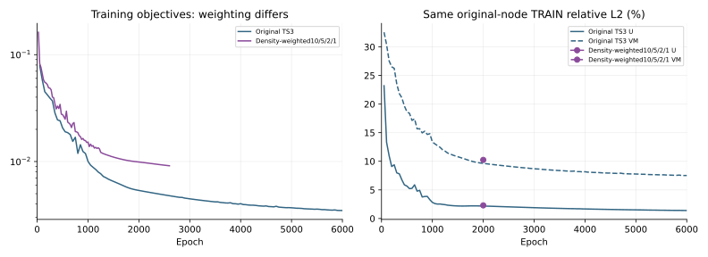
TS3参数约减半 · 深度容量对照
只将8层减为4层，宽128/8头/4slices/MLP2不变；保留相同未训练anchor的0、1、2及末层7映射到3。20个TRAIN、1083269全原节点、56输入、原U/VM标签与等权loss不变；无新增采样、插值或FE。
| 原节点U / VM | 2000 | 4000 | 6000 |
|---|---|---|---|
| 原TS3 · 982884参数 | 2.1782% / 9.6359% | 1.6691% / 8.1736% | 1.3971% / 7.5150% |
| 4层TS3 · 515636参数 | 2.5063% / 11.8815% | 2.4159% / 10.2466% | 2.0526% / 8.8687% |
新组6000/6000；仅2000/4000/6000评估。参数量为原模型52.46%，未混入边界特征修改。
半深度TS3 · loss与原节点误差
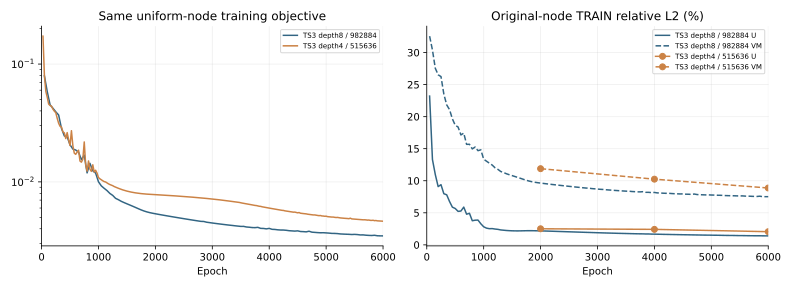
0095大孔斑点 · 固定权重输入扰动
同原TS3 best6000权重、CPU上做原输入/只统一轴向/只统一切向/两者统一/两者置零，共5次推理、0更新。两组同时统一后，中点应力起伏中位数0.175156→0.000974 MPa，但内壁VM误差8.2847%→8.7814%。平滑并不等于更准确；这不是特征重训消融，也不是新半参数模型的结果。5组完整CPU诊断
TS3 · 深度×积分系数输入消融
真正删除N_mean_tangent_xyz和N_mean_axial_xyz六个积分系数通道（原索引26…31），输入56→50；不置零占位、不加入替代系数。原FE物理约束、全部原节点、标签、载荷和radial_normal输入保留；同seed/未训练anchor/等权loss/AdamW/LR/每组6000更新，无新FE或插值。
| 原节点 U / VM | 2000轮 | 4000轮 | 6000轮 |
|---|---|---|---|
| 8层 · 原56维/含积分系数 982884参数 | 2.1782% / 9.6359% | 1.6691% / 8.1736% | 1.3971% / 7.5150% |
| 4层 · 原56维/含积分系数 515636参数 | 2.5063% / 11.8815% | 2.4159% / 10.2466% | 2.0526% / 8.8687% |
| 4层 · 50维/无积分系数 514100参数 | 2.5210% / 11.6947% | 2.3888% / 9.9585% | 2.0168% / 8.8925% |
| 8层 · 50维/无积分系数 981348参数 | 2.1634% / 9.8981% | 1.6978% / 8.1095% | 1.3888% / 7.4910% |
新组按HALF→FULL顺序在单GPU运行；实际best与恰好6000轮分别记录。
无积分系数输入 · loss与原节点误差
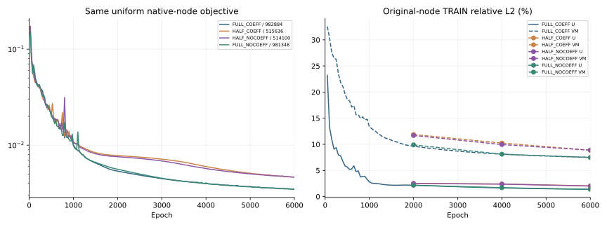
0095 · 四组真实训练的内壁与连接处
四组均完成6000轮，当前实际best也均为6000。内壁2900个原节点；波纹指标为原TRI6边中点VM偏离两端均值的绝对值中位数，单位MPa。该指标与真值误差分开报告。
| 模型 | 实际best | 训练有效分钟 | 内壁U相对L2 | 内壁VM相对L2 | U RMSE/μm | 波纹/MPa |
|---|---|---|---|---|---|---|
| 8层 · 原56维/含积分系数 | 6000 | 153.73 | 52.2341% | 8.2799% | 0.10171 | 0.174617 |
| 4层 · 原56维/含积分系数 | 6000 | 77.50 | 79.5884% | 7.9995% | 0.15497 | 0.154989 |
| 4层 · 50维/无积分系数 | 6000 | 82.70 | 61.9651% | 7.4500% | 0.12066 | 0.004535 |
| 8层 · 50维/无积分系数 | 6000 | 154.50 | 42.7344% | 7.2780% | 0.08321 | 0.003112 |
| 模型 | 固定几何区域 | U相对L2 | VM相对L2 |
|---|---|---|---|
| 8层 · 原56维/含积分系数 | 小端连接处 | 1.8715% | 9.9083% |
| 8层 · 原56维/含积分系数 | 大端连接处 | 19.8393% | 11.2719% |
| 4层 · 原56维/含积分系数 | 小端连接处 | 3.1972% | 11.3526% |
| 4层 · 原56维/含积分系数 | 大端连接处 | 31.4057% | 13.4443% |
| 4层 · 50维/无积分系数 | 小端连接处 | 3.1933% | 11.4161% |
| 4层 · 50维/无积分系数 | 大端连接处 | 26.7053% | 13.2752% |
| 8层 · 50维/无积分系数 | 小端连接处 | 1.8098% | 9.6811% |
| 8层 · 50维/无积分系数 | 大端连接处 | 19.3581% | 11.3063% |
全参数去除系数后全局两误差略降，内壁波纹显著减少且内壁U/VM误差下降。小端连接两误差降低；大端U降低、VM略升。半参数全局U略降、VM略升，局部表现不一致。外观更平滑不代表所有区域都更准确。连接区沿用原几何盒：小端x=10…43 mm、|y|≤19 mm；大端x=87…118 mm、|y|≤24 mm，包含完整厚度原节点。仅20 TRAIN几何、单seed及0095局部观察，不作泛化结论。所有值来自既有保存预测，无新增NN推理、FE求解、输出滤波或标签插值。
无系数TS3 · 深度扩容
仅比较无系数输入模型：真实50维输入，原六列积分系数不参与；16层对8层，宽128、8头、4切片、MLP比2保持。新模型1,915,844参数，为原981,348的1.9523倍。均从未训练权重开始；同20个TRAIN几何、全部原节点、均匀loss与6000轮预算，无新FE、采样或标签插值。
| 原节点U% / VM% | 2000轮 | 4000轮 | 6000轮 | 当前实际best | 有效分钟 |
|---|---|---|---|---|---|
| 8层无系数 FULL50 981,348参数 | 2.1634% / 9.8981% | 1.6978% / 8.1095% | 1.3888% / 7.4910% | 6000 | 154.50 |
| 16层无系数 扩容TS3 1,915,844参数 | 1.9091% / 8.9334% | 1.4955% / 7.9582% | 1.2430% / 7.3248% | 6000 | 613.67 |
未来评估留空；阶段best只从已完成的2000/4000/6000完整评估中选，不代表停止训练。仅20 TRAIN、单seed，不作泛化结论。
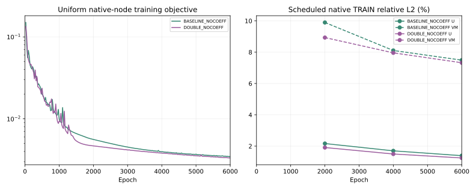
0095 · 无系数模型扩容的局部结果
| 模型 | 实际预测轮次 | 固定区域 | 原节点数 | U相对L2 | VM相对L2 | U RMSE/μm | 内壁波纹/MPa |
|---|---|---|---|---|---|---|---|
| 8层无系数 FULL50 | 6000 | 大孔内壁 | 2900 | 42.7344% | 7.2780% | 0.08321 | 0.0031117 |
| 8层无系数 FULL50 | 6000 | 小端连接处 | 8656 | 1.8098% | 9.6811% | 0.36033 | — |
| 8层无系数 FULL50 | 6000 | 大端连接处 | 12800 | 19.3581% | 11.3063% | 0.17174 | — |
| 16层无系数 扩容TS3 | 6000 | 大孔内壁 | 2900 | 41.9537% | 8.3907% | 0.08169 | 0.0036285 |
| 16层无系数 扩容TS3 | 6000 | 小端连接处 | 8656 | 1.3900% | 9.6303% | 0.27675 | — |
| 16层无系数 扩容TS3 | 6000 | 大端连接处 | 12800 | 17.8030% | 10.6935% | 0.15795 | — |
两模型均完成6000预算，使用各自实际best保存的原节点预测。波纹为TRI6边中点VM偏离两端均值的绝对值中位数；波纹与真值误差分开报告，不预设扩容全面改善。仅0095 TRAIN单例，不能当成20例平均或泛化结果。连接处固定几何盒、完整厚度；没有额外NN推理、FE、输出滤波或标签插值。
本次20例TRAIN平均：U由1.3888%降至1.2430%（相对下降10.50%），VM由7.4910%降至7.3248%（相对下降2.22%）。局部收益不一致：0095内壁VM由7.2780%变为8.3907%；内壁波纹由0.0031117变为0.0036285 MPa。完整区域数值见表，参数增加不代表所有位置误差或波纹都降低。
查看详情：离线PDF、数据统计、模型结果与审阅依据
0095 · 可自由查看的真值与预测模型
同一原始三维外表面，五个窗口分别为有限元真值、TS3预测、MGN预测、TS3误差、MGN误差；支持同步或独立旋转、缩放、平移，单窗放大，切换应力/位移、原网格与节点、裁切外表面，并读取选中的原节点值。固定展示4000轮预算：TS3实际best3950，MGN best4000；与已完成的6000轮续训分开。
0095全69,290原节点应力相对L2：TS3 21.947%、MGN 21.600%；位移为1.743%、2.283%。A节点原ID4076，真值应力530.415 MPa，TS3为1.128 MPa、MGN为2.389 MPa；透视标记只用于定位，原值见检查器。显示原二次边界面的27,730节点，使用已有保存预测，未新增推理或FE求解。
移除积分系数的正式重训
真正删除N_mean_tangent_xyz和N_mean_axial_xyz六个积分系数通道（原索引26…31），输入56→50；不置零占位、不加入替代系数。原FE物理约束、全部原节点、标签、载荷和radial_normal输入保留；同seed/未训练anchor/等权loss/AdamW/LR/每组6000更新，无新FE或插值。 50维推理必须先按identity.input_keep_indices从原56维已知输入取列，再用保存的50维mean/std归一化；不能直接把56维输入喂给新权重。网格尺度波纹、内壁误差和全局误差分开观察，不以显示平滑代替精度。
4层 · 50维/无积分系数 · 6000预算内实际best 6000权重 · 8层 · 50维/无积分系数 · 6000预算内实际best 6000权重 · 协议和输入映射 · 误差曲线 · 固定轮次表 · 逐例指标 · 训练loss
半参数控制
只将8层减为4层，宽128/8头/4slices/MLP2不变；保留相同未训练anchor的0、1、2及末层7映射到3。20个TRAIN、1083269全原节点、56输入、原U/VM标签与等权loss不变；无新增采样、插值或FE。 AdamW/LR/seed/6000全20例累积更新与原组一致。best仅按三次scheduled原节点目标选择，实际epoch独立标记；特征正式重训组尚未启动。
半参数权重：6000预算内实际best 6000 · 协议与诊断 · 误差CSV · 训练lossCSV · 固定轮次表 · 逐例指标
几何密度权重 · 原节点监督
新组6000/6000轮。1083269个原TET10节点、原输入与标签、原未训练初值均保持；只将最密10%、随后15%、随后25%、其余50%节点的loss相对权重设为10、5、2、1，每例权重均值归一化为1。 每个节点取原FE图相邻边物理长度的中位数h，以h的案例内分位排序定义疏密；不使用响应值、误差、sampleID或新采样点。小h表示更密，密度代理为1/h³。密度不等同于曲率，故同时报告两种固定子集。
loss为等工况0.5×(Σw|U误差|²/Σ|原U|²＋Σw VM误差²/Σ原VM²)，分母保持原全节点真值能量，权重均值归一化为1；网络内部切片聚合未改变，只改变监督损失。沿用982884参数TS3、相同seed/未训练初值、56维归一化、6000次全20例累积更新、AdamW/LR和FP32/TF32无AMP。无新增/删除节点、输入特征或标签插值、FE求解、val/test或误差早停。
新TS3权重（6000预算内实际best 6000，按密度加权目标选择；仅原节点输入） · 协议和权重定义 · 误差曲线CSV · 训练lossCSV · 固定轮次表 · 逐例指标
ASM II采样迁移的实现范围
参考Mao与Meng的ASM II：先按子域平均指标定位区域，再选高残差和高梯度候选点。此处使用当前TS3预测经过原TET10插值后的有限应变弹性内力减已知外力，并去除径向和两条整体约束的反力分量；不是预测减真值的监督误差。原20例所有高斯点PEEQ为零，第300轮曾因预测局部J≤0停止。v2保留原300轮断点继续：若某例存在J≤0，标记Jacobian不可容许区域，明确该例当轮平衡残差不可用，以不可容许性优先级供残差通道选点；梯度通道保持不变。不裁剪J、不将非法本构值伪装成物理残差，原有效域指标逐位一致。原断点、故障日志和v1源均保留，总优化预算仍6000轮。残差组装已与原FE内力核对，最大相对差约3.4e-11。梯度由预测U和VM的FE插值场求取；不对跨节点attention的输出和求导冒充逐点空间导数。
这是ASM II采样环节在监督式神经算子中的迁移：保持原监督损失，没有加入PINN残差损失；用弱FE残差代替论文强残差，用有限点预算及FIFO刷新代替持续增长。它也没有实现Badia等FEINN的网格细化/粗化与双范数残差训练。因此不称完整论文复现。新增标签仍为原FE场插值；不使用val/test、误差早停或误差通过线。
新推理权重（实际best 4000，需固定初始均匀附加点上下文） · 完整协议与限制 · 误差评估CSV · 训练loss记录CSV · 固定轮次表 · 逐例指标
曲率采样与论文关系
新TS3当前6000/6000轮；网络982884参数与未训练初值同原TS3，保留全部原节点，每轮增加270824个曲率偏置点（约25%），每50轮轮换4组采样位置。 以TRI6主曲率和相邻面法向跳变构造几何指标，按物理表面积修正采样概率。新增点一半位于曲面、一半位于相邻TET10内部边界层。采样不读取响应值；监督值和已知输入属性采用原TET10形函数插值，未重新求解或加密原FE网格。保留所有原节点、相同56维归一化和目标尺度。相同AdamW/LR历史、6000次全20例累积更新、FP32/TF32无AMP、无误差早停。评估另报高曲率节点子集与正体积权重近似指标。
本组借鉴局部加密监督思路：Badia等 Adaptive FEINNs使用后验误差指标适配FE空间；Mao与Meng使用PDE残差和解梯度选择点。本组只做几何曲率先验加密，不宣称逐公式复现这两种PDE求解方法。
新TS3推理权重（best 5850；需曲率采样上下文） · 配置、来源与限制 · 真实曲线CSV · 固定轮次表CSV · 逐例指标 · 0095曲率与加密点分布

PointNet+FNO同数据、近参数6000轮对照
PointNet+FNO当前6000/6000轮；同20条纯拉伸TRAIN、原节点、相近参数、FP32/TF32无AMP、同AdamW/LR历史。 PointNet+FNO为独立seed20261029初始化，982883个实数参数，比TS3少1个（0.000102%）。复用DeepJEB原PointNetGeometryEncoder（32维输出、64宽、max+mean池化），输入当前几何全部原节点；学习到的32维几何context同时广播进FNO网格和每个节点查询头，每次前向重算并反向传播，绝不缓存学习后的PointNet特征。无PointNet的FNO独立作为第四种方法并列比较，保留其原6000轮结果与权重。4个3D Fourier层、width9、每轴7 modes、latent16、节点查询头220/220/4；64³内部规则网格，全原节点已知特征三线性平均传入，并在每个原节点查询。网格只使用几何与已知输入，不把真值场插值进输入，不重算FE或节点VM投影；归一化和目标尺度与TS3/MGN相同。内部网格会混合邻近节点并跨空域传播，这是本FNO实现与原节点模型的结构差异。
完整20例累积一次更新，6000轮共120000场/6000更新；AdamW3e-4、warm50、前2000余弦至1e-5、后4000固定1e-5，wd0、clip1、无AMP/误差门槛/早停。逐50轮真实评估，逐25轮完整Adam/调度器/CPU+CUDA RNG断点，2000/4000/6000保留完整epoch checkpoint及该轮逐例指标。表格取恰好对应轮次；最终导出预算内最佳TRAIN checkpoint，报告实际best。只作本20TRAIN/单seed/近参数观察。
配置、来源与核验 · FNO6000预算推理权重（best 6000） · 四模型2000/4000/6000轮对照CSV · 逐50轮真实loss与误差CSV · 完成模型最佳checkpoint逐例CSV
FNO同数据、近参数6000轮对照
FNO当前6000/6000轮；同20条纯拉伸TRAIN、原节点、相近参数、FP32/TF32无AMP、同AdamW/LR历史。 FNO为独立seed20261029初始化，982942个实数参数，比TS3多58个（0.005901%）。4个3D Fourier层、width9、每轴7 modes、latent16、节点查询头263/263/4；64³内部规则网格，全原节点已知特征三线性平均传入，并在每个原节点查询。网格只使用几何与已知输入，不把真值场插值进输入，不重算FE或节点VM投影；归一化和目标尺度与TS3/MGN相同。内部网格会混合邻近节点并跨空域传播，这是本FNO实现与原节点模型的结构差异。
完整20例累积一次更新，6000轮共120000场/6000更新；AdamW3e-4、warm50、前2000余弦至1e-5、后4000固定1e-5，wd0、clip1、无AMP/误差门槛/早停。逐50轮真实评估，逐25轮完整Adam/调度器/CPU+CUDA RNG断点，2000/4000/6000保留完整epoch checkpoint及该轮逐例指标。表格取恰好对应轮次；最终导出预算内最佳TRAIN checkpoint，报告实际best。只作本20TRAIN/单seed/近参数观察。
配置、来源与核验 · FNO6000预算推理权重（best 6000） · 三模型2000/4000/6000轮对照CSV · 逐50轮真实loss与误差CSV · 完成模型最佳checkpoint逐例CSV
参数匹配模型 · 4000至6000轮独立续训
4000→6000轮续训：MGN已6000轮：U 2.087% / VM 6.638%（best 5950）；TS3已6000轮：U 1.397% / VM 7.515%（best 6000）。同20条纯拉伸TRAIN、原节点、FP32/TF32、无AMP，保持LR 1e-5与Adam状态；4000轮对照保留。
MGN 985540参数，TS3 W128/S4 982884参数；各从原last.pt第4000轮恢复模型、Adam、调度器与Torch CPU/CUDA RNG，不从best重新训练。每轮全20例累积1更新，各新增2000轮/40000场/2000更新；原前4000曲线与全部源配置保持原样，无学习率重热、无误差门槛或早停。完成6000预算后导出最佳TRAIN checkpoint并如实列出实际best轮次；不作泛化结论。新增耗时单独记录，不把继承的前4000耗时算作新增耗时。
续训配置、断点来源与核验 · MGN6000轮预算推理权重 · TS36000轮预算推理权重 · 实际曲线CSV（含原4000历史） · 已完成6000轮模型的逐例指标
同20条纯拉伸 · MGN参数匹配记录
同20例TRAIN、相近参数、同4000轮：MGN均U 2.276% / VM 7.418%；TS3为1.676% / 8.145%。MGN应力误差更低，TS3位移误差更低；仅限本次20例拟合对照。
MGN为11步消息传递、latent96、两层隐藏MLP；独立同seed20261029初始化。使用TS3同一20个TRAIN几何、1,083,269原TET10节点、原有图边连接，无新增FE或投影、不读取validation/test。每轮累积全部20例后更新一次，共4000轮/80000场/4000更新。前2000轮使用原余弦LR（50轮预热、3e-4至1e-5），后2000轮保持1e-5，无Adam重置；与TS3实际4000轮学习率历史对齐。损失为等工况0.5×（U全向量相对L2平方＋投影节点VM相对L2平方），无误差门槛或早停。最终按原OF规则导出最佳TRAIN checkpoint并报告实际轮次。参数匹配通过宽度/深度配置完成，单seed结果不作为普遍架构或泛化结论。
实际训练用时：MGN 133.66分钟，TS3 102.29分钟；导出最佳TRAIN轮次分别为4000和3950。
宽128、4 slices · 独立续训记录
仅此组追加2000轮，累计4000轮；其余三组保持2000轮。保留原2000轮配置、曲线、权重与结论，在单独目录续训，不把不同训练预算混入原2×2对照。恢复模型、Adam、调度器及CPU/CUDA RNG；按原seed与累计epoch恢复工况顺序。末端学习率1e-5保持不变，无余弦重启/重新预热，不改数据、物理输入、模型容量、载荷或误差门槛。
续训状态、父断点与完整数据 · 20条续训指标 · 续训推理权重 · 实际续训曲线CSV
TS3 · 20条标准轴向拉伸 · 小模型消融
已完成 4/4 组。四组使用相同20个TRAIN几何；每组固定2000轮、全部原TET10节点。当前全量MGN完成且退出后，再独占GPU依次运行。
展开参数、逐例指标、权重与审阅依据
| 模型 | 层 | 宽 | slots | 参数 | 实际轮数 | 耗时(min) | 最佳checkpoint轮 | U均值/最差 % | 节点VM均值/最差 % |
|---|---|---|---|---|---|---|---|---|---|
| W128_S004 | 8 | 128 | 4 | 982,884 | 2000/2000 | 50.592 | 2000 | 2.178 / 2.841 | 9.636 / 22.618 |
| W128_S008 | 8 | 128 | 8 | 983,428 | 2000/2000 | 56.507 | 2000 | 2.209 / 2.860 | 9.707 / 22.560 |
| W192_S004 | 8 | 192 | 4 | 2,191,588 | 2000/2000 | 69.106 | 2000 | 1.665 / 2.260 | 8.617 / 22.097 |
| W192_S008 | 8 | 192 | 8 | 2,192,388 | 2000/2000 | 52.585 | 2000 | 1.610 / 2.134 | 8.426 / 22.048 |
W128_S004 推理权重 · W128_S008 推理权重 · W192_S004 推理权重 · W192_S008 推理权重 · per_case.csv · curves.csv
数据、训练与审阅口径
用户确认沿用既有标准tension：原大头约束、小头销孔轴向拉伸，无厚度偏载、无惯性；没有重定义两端独立外拉边界，也没有新增有限元求解。种子20261029从120个不同TRAIN拉伸几何中固定选20个，总计1,083,269原节点。不按响应误差挑样，不使用validation/test标签。
固定8层8头，宽128/192与slots4/8构成2×2对照。同宽度共享同形状初始权重，4-slot使用8-slot初始化的前4行；不同宽度按同seed独立初始化。沿用旧OF的AdamW、学习率和全20工况梯度累积更新配方，FP32、TF32允许、无AMP。没有误差门槛或误差早停；训练满2000轮，报告最佳训练checkpoint的实际轮次和误差。
这是同20条纯拉伸TRAIN的容量/slot消融。此前混合载荷20条属于不同数据构成，保留历史结果，不能直接当作本实验同数据大模型基线。loss为等工况平均0.5×（位移向量相对L2平方＋投影节点VM相对L2平方），未作曲线平滑。批量模型静态渲染仍需先审核参考图。
完整配置、逐轮数据与核验记录无系数TS3扩容训练协议
仅比较无系数输入模型：真实50维输入，原六列积分系数不参与；16层对8层，宽128、8头、4切片、MLP比2保持。新模型1,915,844参数，为原981,348的1.9523倍。均从未训练权重开始；同20个TRAIN几何、全部原节点、均匀loss与6000轮预算，无新FE、采样或标签插值。 推理须按identity.input_keep_indices从原56维取50列，再用保存的50维mean/std归一化。不得直接输入56维。精确6000轮与预算内实际best分开记录；波纹和误差分别观察。
配置与精确参数 · 固定轮次表 · 完整评估曲线 · 训练loss · 实际best逐例指标 · 16层50维实际best推理权重
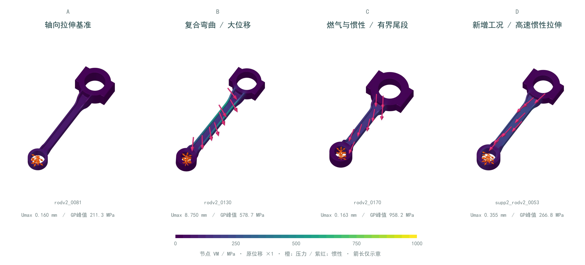
离线报告与来源
1000条数据的口径
1000＝985条原结果＋15条用户授权新工况。原15个未收敛ID排除且保留；不是原1000全部收敛。常规组900、极端组100；150个独立几何，TRAIN/VALIDATION/TEST为800/100/100条，对应120/15/15个互不重叠几何。
1000例均接受十个原载荷目标至1.0，并通过身份、有限性、正J、材料与平衡检查。完整J2及非零PEEQ共27例，其中5例使用已验证有界尾段。最大自由残差1.99994e-7、最小J为0.986045。GPU/CPU为468/532。未逐例认证稳定性或解的唯一性，亦未做实验验证。
最大位移中位数0.136 mm、P95为2.553 mm、最大17.375 mm；原GP峰值VM中位数171.33 MPa、P95为556.85 MPa、最大958.24 MPa。节点显示应力是原四GP单元最大值经参考体积加权投影，不能与原GP峰值混称。
补充数据与结论
旧20条混合载荷与新20条纯拉伸是不同的几何/载荷子集，不能据跨实验误差直接推断减参带来的改善。原7组消融、180行逐例指标、8组960条slice诊断均已交付，不重跑。
slice诊断显示：低节点熵并不等于空间分工；原32/64 slices的末层分配仍高度相似。这是诊断证据，不是架构失效的因果证明。
原容量消融配置、曲线与权重 · 原180行逐例指标 · slice诊断 · 960条逐头诊断 · 64 slices交互查看 · 原20条OF loss CSV · loss来源
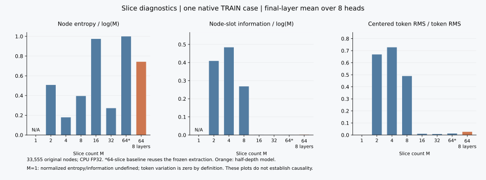
MGN · 全训练集同预算对照
已完成20/20轮，当前轮0/800条，活动用时172.4分钟。固定第20轮100条validation：U平均18.375%，节点VM平均31.309%。
用户要求将TS3 FP64断点暂停，优先运行MGN。MGN为15步消息传递、宽288，共11,760,196参数；沿用原M01预设。800条TRAIN、100条validation、100条test几何隔离；每轮完整800条、累计20轮，每8条工况累积一次更新。使用原TET10全节点和真实网格连接，不采样节点。
与已完成TS3 FP32共用数据、训练归一化、工况顺序、损失、AdamW和学习率配方，均关闭AMP/TF32。MGN按相同种子独立初始化，不能与TS3共享不同形状的权重。MGN额外接收原网格连接，两种模型参数量略有差异。100条validation逐轮记录；固定第20轮，不按验证误差选best，不读test标签，不设误差通过线或早停。
MGN配置与实时结果JSON · 实际epoch CSV · 第20轮推理权重 · 100条验证指标 · 完整计时与TS3对照JSON
执行与计时口径
最大TRAIN网格先做一次无优化更新的完整前后向预热，不计入20轮。CUDA前后向、优化器、训练wall、验证、保存和排队分别记录。首轮实际完成后再估算总耗时；此前TS3精度实验与20条小样本速率不充当MGN全量测速。TS3 FP64断点保留，未经用户授权不自动恢复。
固定第20轮 · 同数据对照
| 模型 | 验证U均值 | 验证节点VM均值 | 训练wall(min) | GPU前后向(min) | 验证(min) | 保存(min) | 活动计时(min) | 峰值allocated(GiB) |
|---|---|---|---|---|---|---|---|---|
| TS3 FP32 | 14.408% | 27.738% | 82.05 | 74.90 | 4.42 | 0.78 | 87.62 | 5.007 |
| MGN FP32 | 18.375% | 31.309% | 163.80 | 157.04 | 6.97 | 1.07 | 172.38 | 8.225 |
本固定预算下TS3的两项验证均值更低。MGN训练wall为TS3的1.996倍，GPU前后向为2.097倍。各计时器保留独立实测值；没有累计排队计数，不用不同计时器相减倒推排队或I/O。
本地 TS3 · FP32 / FP64 速度对比
用户已暂停FP64：完成6轮，下一轮200/800条，625次更新。断点已保存，MGN同预算对照已完成。TS3 FP64断点保留，新纯拉伸消融按队列继续。此前Sockeye部署包保留，未提交任何远端作业。
TS3为16层、宽320、8头、64 slices，共11,882,756个可训练参数。两档分别从相同FP32初始权重开始，FP64将这些值精确提升为双精度；样本顺序一致。每档20个完整epoch，每轮全部800条TRAIN，每条保留原TET10全节点；每次优化更新累积8条。100条validation用于记录误差，100条test在本次测速中不读。
| 精度 | 已完成epoch | 平均训练轮耗时 | 平均每场GPU前后向 |
|---|---|---|---|
| FP32 | 20 / 20 | 246.151 s | 0.2809 s |
| FP64 | 6 / 20 | 3823.173 s（前6轮） | 4.8437 s（前6轮） |
两档均关闭AMP与TF32；FP64的模型、输入、目标、损失和梯度均保留float64。CPU小规模模块类型检查已完成，不能作GPU速度或显存结论。每档正式计时前仅做一次最大原网格前后向预热，不更新权重、不计入20轮。
CUDA事件单独记录前后向和优化器时间；训练整轮时钟包含读数、归一化及数据传输，验证、checkpoint和排队时间另计。输入缓存沿用R06已知特征的float32存储，两档按同一训练集统计归一化后转换为各自精度。无误差通过线或误差早停。用户已要求断点暂停FP64并优先运行MGN；不自动续训。完整优化器、随机数状态和工况游标已保存。
AI审阅：精度比较固定了模型容量、初始化、样本顺序和训练预算；速度应区分纯计算与端到端读数开销。不能把CPU类型检查当GPU测速，也不能把20轮精度实验当作完整泛化结论。M01已按用户最新范围完成；未继续执行的预算用“-”标注。离线PDF保留此前的数据与小样本拟合阶段记录，最新执行计划以本节为准。
当前精度实验状态与口径FP32最终100条validation：平均U相对L2为14.408%，投影节点VM为27.738%。指标对应固定第20轮权重；未读取test标签。
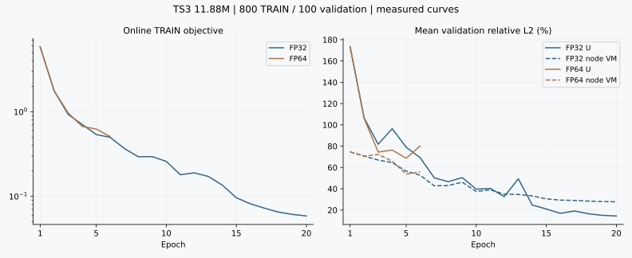
既有本地固定预算训练结果
两模型各1/5/20条嵌套TRAIN，独立初始化，各2000轮全组梯度累积；每条均经历2000次前后向。56维纯已知物理输入，原全节点TET10；输出Uxyz和节点VM。归一化只由各自TRAIN子集计算，无ID或真值响应作为输入，validation/test未参与拟合。不设误差通过线。
TS3共7,626,372参数；MGN共9,298,436参数。两者容量及计算成本不同，六组记录训练段合计23,322.66秒，不含FE生成与暂停空档。下表误差单位为百分数，均为保存预测对原节点标签的相对L2；不作泛化结论。
| 模型 | TRAIN条数 | U均值/最差% | 节点VM均值/最差% | 训练分钟 | 选用epoch |
|---|---|---|---|---|---|
| TS3 | 1 | 0.851 / 0.851 | 4.490 / 4.490 | 5.76 | 1950 |
| TS3 | 5 | 3.850 / 9.510 | 13.021 / 15.614 | 29.43 | 2000 |
| TS3 | 20 | 14.875 / 51.994 | 20.883 / 35.960 | 120.09 | 2000 |
| MGN | 1 | 0.437 / 0.437 | 1.851 / 1.851 | 7.43 | 2000 |
| MGN | 5 | 1.035 / 1.376 | 4.455 / 4.990 | 45.03 | 2000 |
| MGN | 20 | 2.117 / 4.089 | 11.238 / 15.898 | 180.96 | 2000 |
TS3单条保存预测来自第1950轮的最佳训练checkpoint，其余五组来自第2000轮；六组实际都训练满2000轮。完整优化器/RNG checkpoint保留本地，推理权重与逐例误差在R07/R08。
选图与AI审阅记录
代表图有目的地覆盖基准拉伸、大位移复合弯曲、非零塑性尾段和新增工况，不是均匀随机样本。四例几何和载荷不同，不能把场差解释成单一载荷因素的因果效应。原节点表面不重网格；光照仅辅助形状显示，位移倍数1，力箭头方向来自原载荷，长度仅示意。
同例对比使用extreme_rodv2_0130__combined_bending，由既有TS3二十条联合相对误差最大规则确定，未按MGN表现挑图。真值、TS3和MGN共享同行色阶，负应力预测未通过裁零掩盖；节点投影不等于直接GP预测。
AI审阅结论：本次配方下MGN在三档训练集上的平均U/VM误差均低于TS3；应力仍有偏差，TS3多工况大位移响应尚未充分拟合。该结果不是架构极限、跨几何泛化或结构安全认证。全量TS3 FP32与MGN固定20轮均已完成；新纯拉伸4组消融仍在进行，FP64保持用户暂停。
评论与审阅
更新记录
FP32预测场：代表图、最差工况与100条逐例指标
FP32第20轮 · 原节点预测结果
800条TRAIN训练20轮，100条validation的平均位移相对L2为14.41%，投影节点VM为27.74%。下列三张是验证集中综合误差中位、位移最差和VM最差的参考图；图中每个工况都使用完整原节点计算误差，没有裁剪困难区域。
| 选择 | 工况 | U相对L2 | 节点VM相对L2 |
|---|---|---|---|
| 综合误差中位工况 | normal_rodv2_0050__tension_skew | 10.14% | 28.45% |
| 位移误差最差工况 | normal_supp2_rodv2_0135__tension_new_bias_m025 | 90.81% | 28.72% |
| 节点VM误差最差工况 | normal_rodv2_0123__compression_skew | 66.62% | 43.32% |
原GPU验证100条逐例指标 · CPU全原节点预测逐例指标 · 预测来源与参考图说明
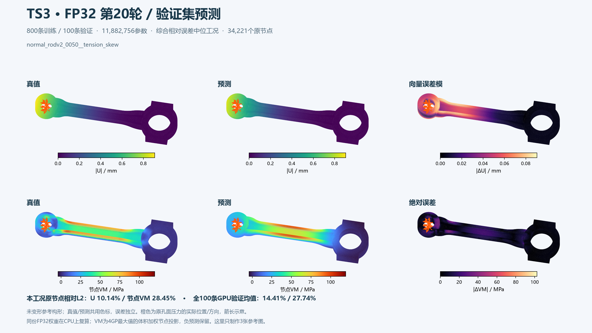
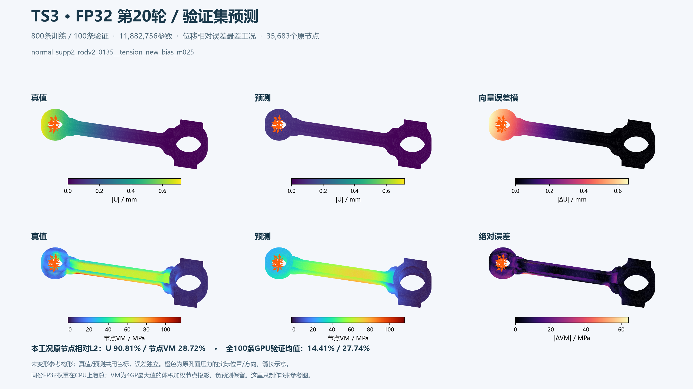
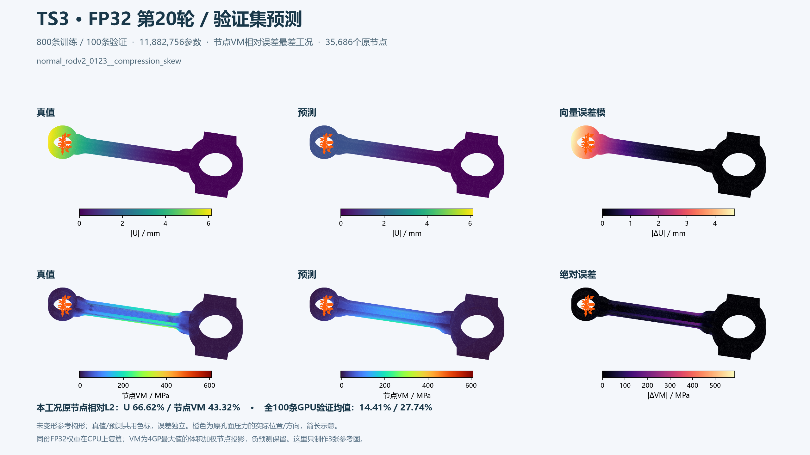
这些是同份第20轮FP32权重的CPU复算场，可能有微小CPU/CUDA算术差异，均保留在数据中。最差位移工况仍有90.81%的相对误差；不能只看平均值或代表图认定全部预测准确。100条test标签未读。